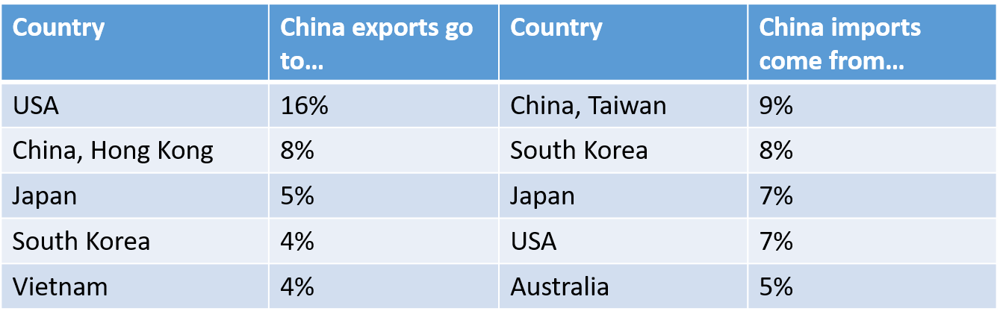
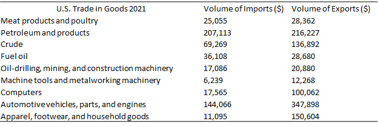

New Trade Theory#
Motivation: The Limits of Classical Trade Theory#
The classical models of comparative advantage — Ricardian technology differences and Heckscher-Ohlin factor endowment differences — share a common prediction: countries gain from trade by exploiting their differences. Each country specializes in goods for which it has a relative cost advantage, and trade flows reflect these underlying asymmetries in technology or factor abundance.
This prediction sits uneasily with several prominent features of observed trade patterns. Two empirical regularities in particular are difficult to reconcile with the classical framework:
Similar countries trade disproportionately with each other. Roughly half of all world trade takes place between high-income economies that are broadly similar in their technology and factor endowments — precisely the countries between which classical theory predicts the least comparative advantage, and therefore the least incentive to trade.
Countries frequently trade similar goods. A large share of trade consists of countries simultaneously importing and exporting goods within the same industry — Germany exporting BMWs and importing Volvos, for instance. Classical theories, which predict specialization across industries based on comparative advantage, have no natural account of this pattern.
These facts call for a complementary theory of trade — one capable of generating gains from trade even between countries that are nearly identical in their fundamentals. New trade theory, developed primarily in the late 1970s and 1980s, provides this account by incorporating economies of scale and product differentiation.


The Gravity Equation#
Before developing the theoretical framework, it is worth noting that the empirical pattern of trade volumes across country pairs is well described by the gravity equation:
where \(T_{ij}\) is the value of trade between countries \(i\) and \(j\), \(Y_i\) and \(Y_j\) are their respective GDPs, and \(D_{ij}\) is the distance between them. The equation takes its name from an analogy to Newtonian gravity: trade between two countries is increasing in their economic mass and decreasing in the distance between them.
The gravity equation has two intuitive foundations:
Income effects on demand: larger economies have higher incomes and therefore spend more on imports in absolute terms.
Supply variety: larger economies produce a wider range of goods, attracting a larger share of other countries’ import spending.
Empirically, the gravity equation is one of the most robust relationships in international economics — it fits trade data across country pairs and time periods remarkably well, with estimated elasticities of trade with respect to GDP typically close to one and distance elasticities in the range of \(-0.7\) to \(-1.5\). Notably, the gravity equation can be derived as an equilibrium prediction from multiple theoretical frameworks, including both the classical models and the new trade theory models developed below, which has made it a workhorse for empirical trade research.
Intra-Industry Trade#
The most striking departure from classical predictions is the prevalence of intra-industry trade — the simultaneous export and import of goods within the same industry. The classical models predict that each country specializes in the production of certain goods and imports the rest; they offer no account of why a country would both export and import cars, chemicals, or machinery at the same time.

Intra-industry trade is closely connected to the growth of international production fragmentation — the practice of producing different components of a final good in different countries to minimize costs. A telling example is the Ford Fiesta: engines produced in the United Kingdom, transmissions in France, clutches in Spain, with final assembly in Germany for sale across Europe. From the perspective of standard trade statistics, this generates simultaneous exports and imports of automobile parts across multiple European countries — all within the same industry classification.

Measuring Intra-Industry Trade#
The degree of intra-industry trade in industry \(k\) is quantified using the Grubel-Lloyd index:
where \(X_k\) and \(M_k\) are the values of exports and imports in industry \(k\) respectively. The index has a natural interpretation at its extremes:
\(T_k = 0\) when a country only exports or only imports good \(k\) — all trade is inter-industry, as classical theory predicts.
\(T_k = 1\) when exports and imports of good \(k\) are equal in value — trade is entirely intra-industry.
Values of \(T_k\) between 0 and 1 indicate a mixture of the two. Empirically, intra-industry trade is most prevalent in manufactured goods traded between advanced industrial economies, and has grown substantially over the past six decades. Estimates suggest that intra-industry trade accounts for between one quarter and one half of all world trade flows, depending on the level of industry aggregation used.


A final empirical regularity is worth noting: while comparative-advantage trade tends to be larger when countries differ more in technology or factor endowments, intra-industry trade is larger precisely when countries are similar — in income, size, and factor proportions. This is consistent with a theory in which the gains from trade arise not from exploiting differences, but from the mutual gains available when similar countries can access a wider range of differentiated products at lower cost. It is this mechanism that new trade theory formalizes.
Economies of Scale#
Before developing the formal model, it is useful to build intuition for why economies of scale can generate gains from trade independently of comparative advantage. Consider a firm that produces output using only labor:

Economies of scale exist when doubling inputs produces more than double the output — or equivalently, when the average cost of production declines with the scale of output. In the example above, increasing labor from 15 to 30 raises output from 10 to 25: a doubling of inputs yields a 150% increase in output. The average labor requirement per unit falls, meaning goods can be produced more cheaply at larger scale.
Now suppose this technology applies to automobile production, and that the automobile industry produces many distinct varieties — Ford Focus, Toyota Corolla, Hyundai Elantra — which consumers regard as imperfect substitutes. Suppose further that both Britain and the United States have access to the same production technology. Classical comparative advantage offers no reason for trade between them. Yet economies of scale provide one.
To see why, compare two plans for organizing world automobile production:
Plan A (no trade): each country produces 10 cars independently, requiring 15 units of labor each. World output is 20 cars using 30 units of labor.
Plan B (specialization): the US employs all 30 units of labor in automobile production, producing 25 cars. World output rises by 5 cars with no additional labor input.
Under Plan B, the US specializes in producing certain varieties of automobiles at larger scale, while Britain, having released labor from car production, can produce other goods that the US no longer makes. Consumers in both countries access the full range of varieties through trade. Mutually beneficial trade arises not from any difference in technology or factor endowments, but purely from the efficiency gains of large-scale production — provided consumers value access to the full range of varieties, a preference we will formalize as love of variety.
Internal versus External Economies of Scale#
Economies of scale can arise at two distinct levels, with very different implications for market structure:
Internal economies of scale occur when a firm’s average cost falls with its own output, independent of the size of the industry. Internal scale economies lead naturally to large firms and imperfectly competitive markets, since a firm that expands gains a cost advantage over its rivals.
External economies of scale occur when a firm’s average cost falls with the total output of the industry, independent of the firm’s own size. External scale economies are consistent with an industry composed of many small, perfectly competitive firms — the cost advantage accrues to the industry as a whole, not to any individual firm within it.
Because these two types of economies of scale have fundamentally different implications for market structure, they are best analyzed separately. We begin with external economies of scale, which preserve the tractability of the competitive framework, before turning to internal economies of scale and the imperfectly competitive models they require.
External Economies of Scale#
Geographic Concentration#
A defining feature of industries exhibiting external economies of scale is geographic concentration. When cost advantages arise at the industry level, firms benefit from locating near one another, and the resulting clusters can sustain cost advantages that no individual firm could achieve in isolation. Examples are pervasive:
Semiconductor design and fabrication in Silicon Valley
Investment banking and financial services in New York and London
Financial technology in Shenzhen and Shanghai
Film and television production in Hollywood
Button and zipper manufacturing in Qiaotou, China
Cigarette lighter production in Wenzhou, China
Software and information services in Bangalore, India
The persistence of these clusters — often over decades or centuries — reflects the self-reinforcing nature of external economies: once an industry is established in a location, the cost advantages it generates attract further entry, which deepens those advantages.
Sources of External Economies#
Marshall (1890) identified three distinct mechanisms through which geographic concentration generates industry-level cost advantages, all three of which remain central to the modern literature.
Specialized suppliers. Production of complex goods, and the development of new products, requires access to specialized inputs — equipment, components, and services — that are themselves subject to scale economies. A single firm typically cannot generate sufficient demand to support a supplier of highly specialized capital goods, but a cluster of firms can. Silicon Valley’s semiconductor industry illustrates this mechanism precisely. As the cluster grew, engineers spun out of established firms to found suppliers of specialized equipment — diffusion ovens, photomasks, step-and-repeat cameras, precision chemicals — that no individual firm could have justified purchasing on its own. A new entrant locating outside Silicon Valley would face a significant cost disadvantage simply from lacking access to this supplier ecosystem.
Labor market pooling. A geographic cluster creates a thick market for workers with highly specialized skills, benefiting both employers and employees. Firms can hire qualified workers readily without bearing the full cost of training them internally; workers can find new employment within the cluster when their current employer downsizes or fails, reducing the personal risk of acquiring highly specialized human capital. The film industry illustrates this well: the volume of active productions fluctuates substantially, but because directors, cinematographers, sound engineers, and set designers are concentrated in the same labor market, workers can move fluidly between projects as funding conditions change. The same dynamic applies to financial services in New York or technology in Silicon Valley — the depth of the local labor pool is itself a source of productive efficiency.
Knowledge spillovers. Innovation and technological progress depend not only on formal research and development, but on the informal exchange of ideas that occurs through personal interaction — conversations between researchers, the movement of workers between firms, observation of competitors’ practices, and the diffusion of tacit knowledge that cannot easily be codified or transmitted at a distance. This kind of knowledge diffusion is most effective when an industry is geographically concentrated, since proximity lowers the cost of interaction and increases the density of information flows. University clusters provide a clear analogy: institutions located near one another can share faculty, attract overlapping student populations, and benefit from the cross-pollination of ideas in ways that geographically isolated institutions cannot.
External Economies of Scale and Trade#
To examine the trade implications of external economies, consider two countries — China and the United States — each capable of producing buttons, an industry that exhibits external economies of scale at the industry level.

The supply curve is downward-sloping because external economies imply that a larger industry operates at lower average cost: as the industry expands, the cluster deepens, specialized suppliers proliferate, and the labor pool thickens, all reducing unit costs. Suppose that in autarky, China’s button industry is larger and therefore produces at lower cost than the US industry. When trade opens, demand for Chinese buttons expands, the Chinese industry grows, and costs fall further; simultaneously, the US industry contracts, losing the scale needed to sustain its cluster, and costs rise. The equilibrium outcome is complete specialization: China supplies the entire world market.

This example has several important implications that distinguish the external economies framework from classical trade theory:
The world price of buttons falls below both countries’ autarky prices — both countries benefit as consumers, even though US button producers are eliminated.
External economies make complete geographic concentration of world production in a single location a natural equilibrium outcome, not a special case.
The pattern of specialization need not reflect any underlying difference in comparative advantage. China produces buttons for the world not necessarily because it has a technological edge or an abundance of relevant factors, but because it developed a large-scale button industry first.
History, Lock-In, and the Limits of Trade#
The last point has a striking implication: the pattern of specialization under external economies of scale may be determined by history and accident rather than by underlying comparative advantage. London became the world’s leading financial center in the nineteenth century when Britain was the dominant global economy — a position it retained long after Britain’s economic leadership had passed. New York’s rise as a financial center owed much to the Erie Canal, which made it the nation’s pre-eminent port and concentrated commercial activity there. Silicon Valley’s origins trace in part to the decision of two Stanford graduates, Hewlett and Packard, to start a company in a Palo Alto garage in 1939 — a contingency that could easily have located the electronics industry elsewhere.
Once a cluster is established, it may persist even if another location could, in principle, produce the same good more cheaply. The incumbent cluster offers specialized suppliers, a thick labor market, and accumulated knowledge spillovers that a potential entrant elsewhere cannot immediately replicate. This creates genuine lock-in: an industry may remain in the “wrong” location simply because the right location has never had the opportunity to build the cluster to sufficient scale.

In the figure above, Vietnam has a lower long-run cost curve than China — meaning that if Vietnam’s button industry were developed to full scale, it could supply buttons more cheaply than China. But China’s established cluster can supply at a price that Vietnam, starting from small scale, cannot match. Trade locks in China’s incumbency and prevents Vietnam from ever reaching the scale at which its latent cost advantage would be realized.
Policy Implications#
The lock-in result provides a theoretical foundation for infant industry protection: temporary trade barriers that allow a country’s nascent industry to reach the scale at which it can compete internationally. If Vietnam erected tariffs on Chinese buttons, its domestic industry might grow to sufficient scale that the tariffs could eventually be removed while the industry remains competitive.
However, the case for infant industry protection should be approached with considerable caution for several reasons. First, identifying in advance which industries exhibit the relevant external economies — and which countries have a latent comparative advantage in them — is extremely difficult in practice; governments have a poor track record of making such picks successfully. Second, the transition costs are real and fall on current consumers and taxpayers, who must bear higher prices today in exchange for a potential benefit that may not materialize, or that may accrue only to future generations. Third, protection creates rents that attract political pressure to extend it beyond any economically justified period. Any policy argument invoking infant industry logic should therefore be scrutinized carefully, with the burden of proof on those claiming to have identified a genuine lock-in case.
Internal Economies of Scale and the Krugman (1979) Model#
Why Internal Economies of Scale Require Imperfect Competition#
Internal economies of scale arise when a firm’s average cost of production declines with its own output. To see why this is incompatible with perfect competition, consider the simplest possible cost structure:
where \(F > 0\) is a fixed cost of production — overhead, product development, or any cost that must be incurred regardless of output — and \(c > 0\) is a constant marginal cost. The average and marginal costs are:
Since \(AC > MC\) for all finite \(Q\), average cost strictly exceeds marginal cost at every output level and converges to \(c\) only asymptotically as \(Q \to \infty\).
The model we now develop — due to Krugman (1979) — captures this environment using monopolistic competition: firms have pricing power over their individual variety, but the market is large enough that no firm accounts for a significant share of demand and strategic interaction can be ignored. In Krugman’s words:
“This paper develops a simple, general equilibrium model of noncomparative-advantage trade. Trade is driven by economies of scale, which are internal to firms. Because of the scale economies, markets are imperfectly competitive. Nonetheless, one can show that trade, and gains from trade, will occur, even between countries with identical tastes, technology, and factor endowments.”
The model also allows us to introduce two features of real-world industries that the classical models abstract from entirely: product differentiation — firms produce distinct varieties that consumers value differently — and, in extensions we will encounter later, heterogeneity in firm performance.
Environment#
Imperfect competition describes a market environment with the following features:
Monopoly power: each firm produces a differentiated variety of good and faces a downward sloping demand curve
No strategic interaction: there are a large number of firms to each individual firm ignores its impact on the demand of other firms
Free entry and exit: there are no barriers to entry or exit so economic profits are driven to zero in equilibrium
Monopoly power means that firms have to choose the price they sell their product at. They are not price takers. Boeing, the large aircraft manufacturer, competes with European firm Airbus. Boeing knows that if it wants to sell more airplanes than it currently does, it has to reduce its price. This is very different from perfect competition, where firms have no control over the price because everyone produces exactly the same good, so if a firm charges a higher price that the market it sells nothing; and if it charges a lower price it loses money.
Preferences. There are \(L\) consumers with identical preferences over \(N\) varieties of a differentiated good, indexed \(i = 1, \ldots, N\):
The assumption \(v'' < 0\) captures love of variety: consumers have diminishing marginal utility from any individual variety, so they prefer to spread consumption across varieties rather than concentrate it in one. Each consumer supplies one unit of labor inelastically, earning wage \(w\), and faces the budget constraint:
Technology. Labor is the only factor of production. The labor required to produce \(q_i\) units of variety \(i\) is:
where \(f > 0\) is the fixed labor requirement and \(\psi > 0\) is a productivity parameter common to all firms. This is the variable-plus-fixed cost structure from above, expressed in units of labor. The fixed cost \(f\) generates internal economies of scale: average labor per unit of output, \(f/q_i + 1/\psi\), is strictly decreasing in \(q_i\).
Equilibrium Conditions#
Consumer optimization. Consumers maximize utility subject to their budget constraint.
The first-order condition for variety \(i\) is:
where \(\lambda\) is the marginal utility of income (the Lagrange multiplier on the budget constraint). This standard condition equates the marginal utility of consuming variety \(i\) to its price, scaled by the marginal utility of income.
Firm optimization. Each firm chooses output \(q_i\) to maximize profits, taking as given the demand curve it faces:
The first-order condition yields the familiar markup pricing rule:
where \(\eta_i \equiv -(v'/c_i v'') > 0\) is the price elasticity of demand for variety \(i\), which depends on the curvature of \(v\). The markup over marginal cost \(w/\psi\) is \(\eta_i/(\eta_i - 1) > 1\): firms with more elastic demand (higher \(\eta_i\)) charge a lower markup. This is the standard monopolistic competition pricing condition — it differs from perfect competition precisely in that \(p_i > MC = w/\psi\).
Free entry and market clearing. Free entry drives economic profits to zero in the long run, so price equals average cost:
Goods and labor market clear:
Symmetric Equilibrium#
By symmetry — all firms face the same technology, consumers have identical preferences, and there is no comparative advantage — the equilibrium features identical prices, quantities, and consumption across all varieties: \(p_i = p\), \(q_i = q\), \(c_i = c\) for all \(i\). The equilibrium \((c, p/w)\) is jointly determined by two conditions:
The pricing condition (PP) is horizontal in \((c, p/w)\) space: since the demand elasticity \(\eta\) depends only on the shape of \(v\) and not on the scale of consumption under symmetry, the markup — and therefore the price-wage ratio — is constant. The free entry condition (FE) is downward-sloping: as per-consumer consumption \(c\) rises, output per firm \(q = Lc\) rises, fixed costs are spread over more units, and average cost (and therefore price) falls. Equilibrium is at the intersection of the two curves.

Given the equilibrium \((c^*, q^* = Lc^*)\), the equilibrium number of varieties follows from the labor market clearing condition:
The number of varieties is proportional to the size of the labor force: a larger economy supports more firms and produces more varieties in equilibrium.
International Trade#
Now suppose two economies with identical tastes, technologies, and factor endowments open to trade. Since the economies are symmetric, wages and goods prices are equalized immediately. The effect of trade is equivalent to a single economy experiencing an increase in its effective labor force from \(L\) to \(L + L^*\): the integrated market is larger, and firms can achieve greater scale.

The larger market shifts the FE curve: for any given \(p/w\), the zero-profit condition is now satisfied at a higher level of consumption per variety (since fixed costs are spread over a larger market). The new equilibrium features lower \(p/w\) — a higher real wage — and higher \(c^*\) per variety. The gains from trade are realized through two channels:
Lower prices (higher real wages): each surviving firm operates at greater scale, moving further down its average cost curve, so goods are produced more cheaply.
Greater variety: the total number of varieties available to consumers in the integrated economy is \(N + N^* > N\), so consumers gain access to varieties that were not produced domestically before trade.
The number of varieties produced in each country after trade is:
Since post-trade output per firm \(q^*\) exceeds pre-trade output (firms move down their average cost curves), each country produces fewer varieties than before trade — but consumers in each country now have access to the full set \(N + N^*\). Each variety is produced in exactly one country; the direction of trade is indeterminate since all varieties are symmetric. Since all goods have the same price, expenditure on each country’s goods is proportional to its labor force, and trade is balanced:
The volume of trade as a share of world income is maximized when the two economies are of equal size — a prediction consistent with the empirical observation that trade is disproportionately concentrated between countries of similar size.
Selection and Scale Effects#
The Krugman model implies two distinct effects of trade liberalization on the productive structure of an economy:
Scale effect: surviving firms expand output as they gain access to the larger integrated market, moving down their average cost curves and raising productivity.
Selection effect: some firms are forced to exit as intensified competition from foreign varieties reduces the equilibrium number of domestic producers.
In the symmetric version of the model developed here, the selection effect has no productivity consequences — all firms are identical, so exit does not alter average firm productivity. Empirically, however, the selection effect is quantitatively important and operates through the reallocation of resources from less to more productive firms. Trefler (2004) provides compelling evidence from the Canada-US Free Trade Agreement: the short-run costs of liberalization included a 15% decline in manufacturing employment and a 10% reduction in output and plant numbers, while the long-run gains included productivity improvements of approximately 17% — roughly 1% per year — with about half of those gains attributable to plant entry and exit. Capturing this selection effect in a model requires allowing firms to differ in their underlying productivity, a feature that the symmetric Krugman model deliberately abstracts from. This is the motivation for the heterogeneous firms framework we turn to next.
Conclusion#
The new trade theory framework developed in this chapter offers a coherent account of the empirical patterns that classical models struggle to explain. The key insights are:
Economies of scale — whether external or internal — generate gains from trade even between countries that are identical in their technology, factor endowments, and preferences.
Internal economies of scale require imperfect competition: the fixed-cost structure that generates scale economies is incompatible with competitive pricing at marginal cost.
Trade in the Krugman model raises welfare through two channels: lower goods prices (higher real wages) and expanded product variety.
The volume of trade is largest between similar-sized economies — consistent with the gravity equation patterns documented at the outset of this chapter.
The symmetric model predicts a scale effect from trade but no productivity-enhancing selection effect. Generating the latter requires firms to be heterogeneous in productivity — the subject of the next chapter.